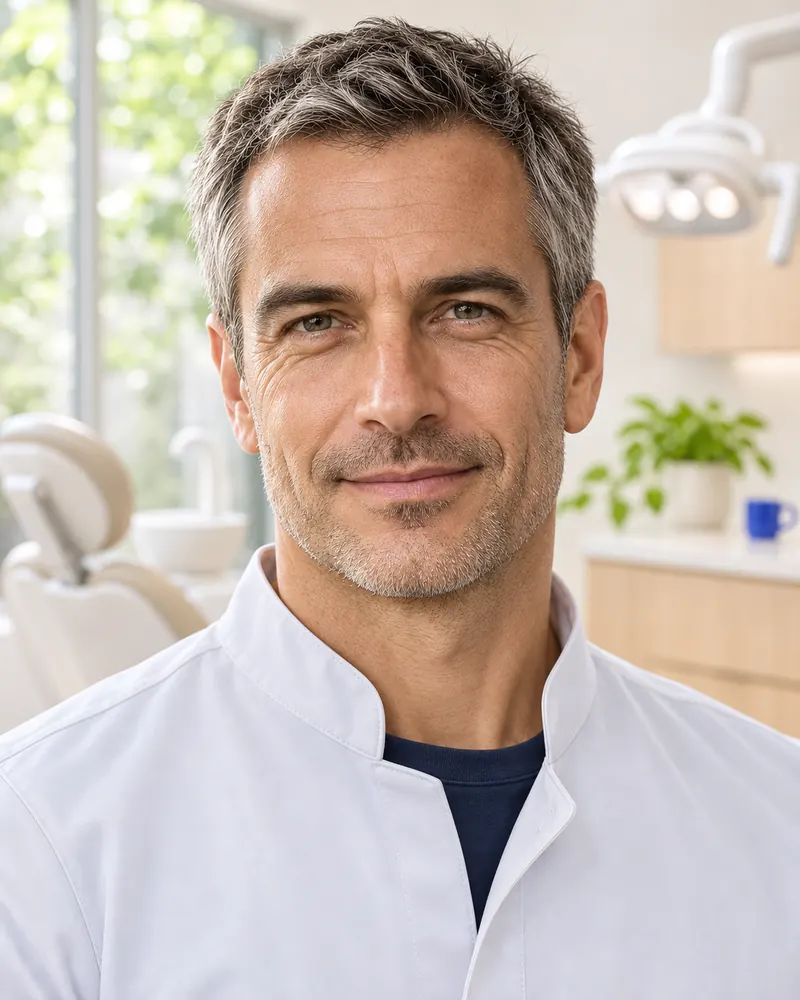
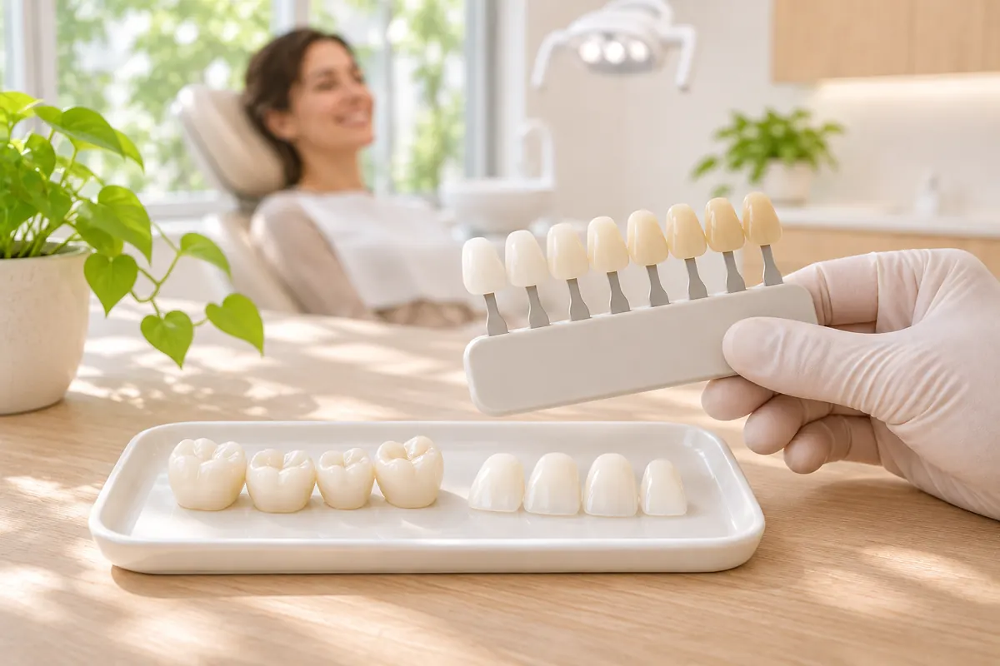
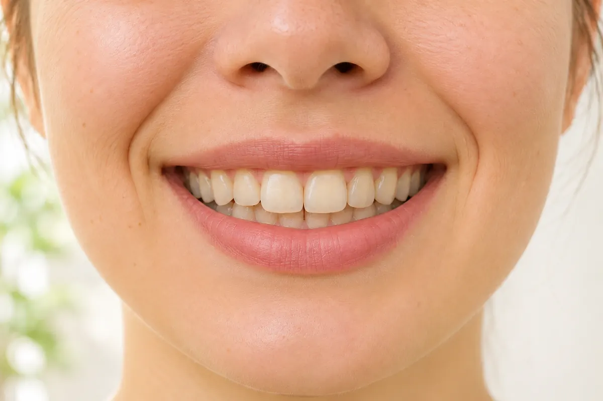

Андрей Воронцов
Хирург-имплантолог
Подбирает материал коронок и виниров и устанавливает их.
Записаться к врачуСайт использует cookies и сервис Яндекс Карты: при показе карты Яндекс получает ваш IP‑адрес и cookies. Подробнее — в политике обработки данных.Сайт использует cookies и Яндекс Карты: при показе карты Яндекс получает ваш IP‑адрес и cookies. Подробнее
Восстанавливаем форму и цвет зуба. Цирконий, металлокерамика, керамические виниры.

Надёжный вариант для жевательных зубов.
Светлее и без тёмного края у десны.
Тонкие накладки для передних зубов.
Имеются противопоказания, необходима консультация специалиста.
Подбираем вариант и цвет.
Временная коронка на время изготовления.
Через 5–7 дней под анестезией.

 допосле
допосле

Подбирает материал коронок и виниров и устанавливает их.
Записаться к врачу